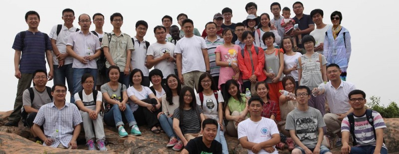

WELCOME to the VISION LAB @ Qingdao, OUC

The Vision Research Group of the Department of Computer Science and Technology was established by Prof. Junyu Dong in 2004. The main research interests in our group include Computer Vision, Underwater Vision, Visual Perception, Pattern Recognition, Machine Learning, Computer Graphics, Virtual Reality, Marine Big Data Analysis, Complex Network and Visualization. Research projects were funded by Natural Science Foundation of China (NSFC), International S&T Cooperation Program (ISTCP , Ministry of Science and Technology), Ministry of Education, China Postdoctoral Science Foundation, Shandong Provincial Government, Qingdao Municipal Government and Companies. We encourage the academic exchanges with the researchers abroad and home, and welcome the promising students to join us.
中国海洋大学视觉实验室成立于2004年，主要从事计算机视觉与视觉感知、模式识别与机器学习、计算机图形与可视化、海洋大数据分析等领域的研究，负责人是董军宇教授。从成立至今，中国海洋大学视觉实验室面向国家重大需求，解决了若干关键科学问题，得到了国家重点研发计划项目、国家自然科学基金面上项目、国家科技支撑计划项目以及山东省重点研发计划项目等资助。实验室学术创新能力突出，近年来在TPAMI、TMM、TC、TIE、TCSVT、PR等国际一流学术期刊和 ICCV、ECCV、AAAI 等国际一流学术会议发表论文 60 余篇，得到同行的广泛引用和认可。实验室高度重视研究生培养：一方面，为学生提供一流的硬件设施和丰厚的科研奖励；另一方面，在科研训练中积极帮助学生成长，相当多的硕士在毕业时学术成果和水平可以达到中等博士水准。实验室毕业的学生或出国深造，或进入华为、阿里、百度等企业，或进入政府机关、事业单位。如果您希望加入视觉实验室或者与我们合作，请与董军宇教授联系。
News
| 2020-05-16 | iCAST 2020 征集 special session |
| 2020-01-01 | 实验室成员参加2020年青岛迎新跑 |
| 2019-12-19 | Welcome papers for the Deep Learning Special Session of IJCNN/WCCI 2020 |
| 2019-09-24 | 北京大学彭宇新教授访问实验室 |
| 2019-07-28 | 英国斯特拉斯克莱德大学Jinchang Ren教授访问实验室 |
| 2019-07-27 | 英国皇家工程院院士Sheng Chen教授访问实验室 |
| 2019-07-22 | 实验室参与组织“CCF多媒体专委走进海大”活动 |
| 2019-07-16 | 仲国强老师获BICS会议最佳论文 |
| 2017-12-24 | 实验室团队在CCF大数据与计算智能大赛取得佳绩 |
| 2017-10-16 | 国际图形和图像处理国际会议（ICGIP）成功举办 |